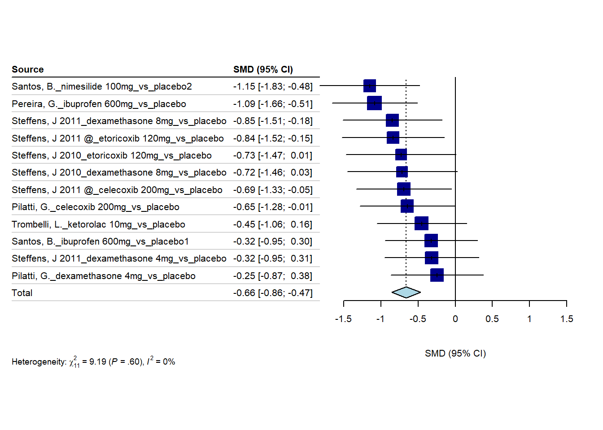

3/8/2023
2023-03-08
Last updated: 2023-05-15
Checks: 6 1
Knit directory: Collaborations/
This reproducible R Markdown analysis was created with workflowr (version 1.7.0). The Checks tab describes the reproducibility checks that were applied when the results were created. The Past versions tab lists the development history.
The R Markdown file has unstaged changes. To know which version of
the R Markdown file created these results, you’ll want to first commit
it to the Git repo. If you’re still working on the analysis, you can
ignore this warning. When you’re finished, you can run
wflow_publish to commit the R Markdown file and build the
HTML.
Great job! The global environment was empty. Objects defined in the global environment can affect the analysis in your R Markdown file in unknown ways. For reproduciblity it’s best to always run the code in an empty environment.
The command set.seed(20210523) was run prior to running
the code in the R Markdown file. Setting a seed ensures that any results
that rely on randomness, e.g. subsampling or permutations, are
reproducible.
Great job! Recording the operating system, R version, and package versions is critical for reproducibility.
Nice! There were no cached chunks for this analysis, so you can be confident that you successfully produced the results during this run.
Great job! Using relative paths to the files within your workflowr project makes it easier to run your code on other machines.
Great! You are using Git for version control. Tracking code development and connecting the code version to the results is critical for reproducibility.
The results in this page were generated with repository version fb8b434. See the Past versions tab to see a history of the changes made to the R Markdown and HTML files.
Note that you need to be careful to ensure that all relevant files for
the analysis have been committed to Git prior to generating the results
(you can use wflow_publish or
wflow_git_commit). workflowr only checks the R Markdown
file, but you know if there are other scripts or data files that it
depends on. Below is the status of the Git repository when the results
were generated:
Ignored files:
Ignored: analysis/.Rhistory
Ignored: analysis/2022_Mar2_Marinho_cache/
Unstaged changes:
Modified: analysis/2023_0301_Christos.Rmd
Note that any generated files, e.g. HTML, png, CSS, etc., are not included in this status report because it is ok for generated content to have uncommitted changes.
These are the previous versions of the repository in which changes were
made to the R Markdown (analysis/2023_0301_Christos.Rmd)
and HTML (docs/2023_0301_Christos.html) files. If you’ve
configured a remote Git repository (see ?wflow_git_remote),
click on the hyperlinks in the table below to view the files as they
were in that past version.
| File | Version | Author | Date | Message |
|---|---|---|---|---|
| Rmd | d3ee077 | Han | 2023-04-10 | 4/10/2023 |
| html | d3ee077 | Han | 2023-04-10 | 4/10/2023 |
| Rmd | ecabd2b | Han | 2023-04-03 | 4/3/2023 |
| html | ecabd2b | Han | 2023-04-03 | 4/3/2023 |
| Rmd | c891d01 | Han | 2023-03-20 | 3/20/2023 |
| html | c891d01 | Han | 2023-03-20 | 3/20/2023 |
| Rmd | 1f23563 | Han | 2023-03-08 | 3/8/2023 |
| html | 1f23563 | Han | 2023-03-08 | 3/8/2023 |
use R package BUGSnet
multinma
studyn trtn y se n diff se_diff
1 1 1 -1.22 0.504 54 NA 0.504
2 1 3 -1.53 0.439 95 -0.31 0.668
3 2 1 -0.70 0.282 172 NA 0.282
4 2 2 -2.40 0.258 173 -1.70 0.382
5 3 1 -0.30 0.505 76 NA 0.505
6 3 2 -2.60 0.510 71 -2.30 0.718Analysis of arm-based data
A network with 7 AgD studies (arm-based).
------------------------------------------------------- AgD studies (arm-based) ----
Study Treatment arms
1 2: 1 | 3
2 2: 1 | 2
3 3: 4 | 1 | 2
4 2: 4 | 3
5 2: 4 | 3
6 2: 4 | 5
7 2: 4 | 5
Outcome type: continuous
------------------------------------------------------------------------------------
Total number of treatments: 5
Total number of studies: 7
Reference treatment is: 4
Network is connected
fixed effect meta-analysis
A Normal prior distribution: location = 0, scale = 100.
50% of the prior density lies between -67.45 and 67.45.
95% of the prior density lies between -196 and 196.
SAMPLING FOR MODEL 'normal' NOW (CHAIN 1).
Chain 1:
Chain 1: Gradient evaluation took 0 seconds
Chain 1: 1000 transitions using 10 leapfrog steps per transition would take 0 seconds.
Chain 1: Adjust your expectations accordingly!
Chain 1:
Chain 1:
Chain 1: Iteration: 1 / 2000 [ 0%] (Warmup)
Chain 1: Iteration: 200 / 2000 [ 10%] (Warmup)
Chain 1: Iteration: 400 / 2000 [ 20%] (Warmup)
Chain 1: Iteration: 600 / 2000 [ 30%] (Warmup)
Chain 1: Iteration: 800 / 2000 [ 40%] (Warmup)
Chain 1: Iteration: 1000 / 2000 [ 50%] (Warmup)
Chain 1: Iteration: 1001 / 2000 [ 50%] (Sampling)
Chain 1: Iteration: 1200 / 2000 [ 60%] (Sampling)
Chain 1: Iteration: 1400 / 2000 [ 70%] (Sampling)
Chain 1: Iteration: 1600 / 2000 [ 80%] (Sampling)
Chain 1: Iteration: 1800 / 2000 [ 90%] (Sampling)
Chain 1: Iteration: 2000 / 2000 [100%] (Sampling)
Chain 1:
Chain 1: Elapsed Time: 0.146 seconds (Warm-up)
Chain 1: 0.146 seconds (Sampling)
Chain 1: 0.292 seconds (Total)
Chain 1:
SAMPLING FOR MODEL 'normal' NOW (CHAIN 2).
Chain 2:
Chain 2: Gradient evaluation took 0 seconds
Chain 2: 1000 transitions using 10 leapfrog steps per transition would take 0 seconds.
Chain 2: Adjust your expectations accordingly!
Chain 2:
Chain 2:
Chain 2: Iteration: 1 / 2000 [ 0%] (Warmup)
Chain 2: Iteration: 200 / 2000 [ 10%] (Warmup)
Chain 2: Iteration: 400 / 2000 [ 20%] (Warmup)
Chain 2: Iteration: 600 / 2000 [ 30%] (Warmup)
Chain 2: Iteration: 800 / 2000 [ 40%] (Warmup)
Chain 2: Iteration: 1000 / 2000 [ 50%] (Warmup)
Chain 2: Iteration: 1001 / 2000 [ 50%] (Sampling)
Chain 2: Iteration: 1200 / 2000 [ 60%] (Sampling)
Chain 2: Iteration: 1400 / 2000 [ 70%] (Sampling)
Chain 2: Iteration: 1600 / 2000 [ 80%] (Sampling)
Chain 2: Iteration: 1800 / 2000 [ 90%] (Sampling)
Chain 2: Iteration: 2000 / 2000 [100%] (Sampling)
Chain 2:
Chain 2: Elapsed Time: 0.143 seconds (Warm-up)
Chain 2: 0.163 seconds (Sampling)
Chain 2: 0.306 seconds (Total)
Chain 2:
SAMPLING FOR MODEL 'normal' NOW (CHAIN 3).
Chain 3:
Chain 3: Gradient evaluation took 0 seconds
Chain 3: 1000 transitions using 10 leapfrog steps per transition would take 0 seconds.
Chain 3: Adjust your expectations accordingly!
Chain 3:
Chain 3:
Chain 3: Iteration: 1 / 2000 [ 0%] (Warmup)
Chain 3: Iteration: 200 / 2000 [ 10%] (Warmup)
Chain 3: Iteration: 400 / 2000 [ 20%] (Warmup)
Chain 3: Iteration: 600 / 2000 [ 30%] (Warmup)
Chain 3: Iteration: 800 / 2000 [ 40%] (Warmup)
Chain 3: Iteration: 1000 / 2000 [ 50%] (Warmup)
Chain 3: Iteration: 1001 / 2000 [ 50%] (Sampling)
Chain 3: Iteration: 1200 / 2000 [ 60%] (Sampling)
Chain 3: Iteration: 1400 / 2000 [ 70%] (Sampling)
Chain 3: Iteration: 1600 / 2000 [ 80%] (Sampling)
Chain 3: Iteration: 1800 / 2000 [ 90%] (Sampling)
Chain 3: Iteration: 2000 / 2000 [100%] (Sampling)
Chain 3:
Chain 3: Elapsed Time: 0.15 seconds (Warm-up)
Chain 3: 0.177 seconds (Sampling)
Chain 3: 0.327 seconds (Total)
Chain 3:
SAMPLING FOR MODEL 'normal' NOW (CHAIN 4).
Chain 4:
Chain 4: Gradient evaluation took 0 seconds
Chain 4: 1000 transitions using 10 leapfrog steps per transition would take 0 seconds.
Chain 4: Adjust your expectations accordingly!
Chain 4:
Chain 4:
Chain 4: Iteration: 1 / 2000 [ 0%] (Warmup)
Chain 4: Iteration: 200 / 2000 [ 10%] (Warmup)
Chain 4: Iteration: 400 / 2000 [ 20%] (Warmup)
Chain 4: Iteration: 600 / 2000 [ 30%] (Warmup)
Chain 4: Iteration: 800 / 2000 [ 40%] (Warmup)
Chain 4: Iteration: 1000 / 2000 [ 50%] (Warmup)
Chain 4: Iteration: 1001 / 2000 [ 50%] (Sampling)
Chain 4: Iteration: 1200 / 2000 [ 60%] (Sampling)
Chain 4: Iteration: 1400 / 2000 [ 70%] (Sampling)
Chain 4: Iteration: 1600 / 2000 [ 80%] (Sampling)
Chain 4: Iteration: 1800 / 2000 [ 90%] (Sampling)
Chain 4: Iteration: 2000 / 2000 [100%] (Sampling)
Chain 4:
Chain 4: Elapsed Time: 0.157 seconds (Warm-up)
Chain 4: 0.157 seconds (Sampling)
Chain 4: 0.314 seconds (Total)
Chain 4: A fixed effects NMA with a normal likelihood (identity link).
Inference for Stan model: normal.
4 chains, each with iter=2000; warmup=1000; thin=1;
post-warmup draws per chain=1000, total post-warmup draws=4000.
mean se_mean sd 2.5% 25% 50% 75% 97.5% n_eff Rhat
d[1] 0.52 0.01 0.48 -0.42 0.20 0.53 0.83 1.48 1645 1
d[2] -1.30 0.01 0.53 -2.33 -1.65 -1.29 -0.95 -0.26 1696 1
d[3] 0.03 0.01 0.33 -0.59 -0.19 0.03 0.25 0.68 1946 1
d[5] -0.30 0.00 0.21 -0.70 -0.44 -0.30 -0.17 0.11 2695 1
mu[1] -1.64 0.01 0.47 -2.55 -1.94 -1.63 -1.31 -0.75 2059 1
mu[2] -1.16 0.01 0.52 -2.18 -1.50 -1.15 -0.81 -0.14 1595 1
mu[3] -1.10 0.01 0.42 -1.96 -1.38 -1.10 -0.82 -0.27 2079 1
mu[4] -0.38 0.01 0.30 -0.97 -0.59 -0.38 -0.18 0.20 2376 1
mu[5] -0.54 0.01 0.34 -1.22 -0.76 -0.53 -0.32 0.11 2579 1
mu[6] -2.20 0.00 0.17 -2.53 -2.32 -2.20 -2.08 -1.87 2405 1
mu[7] -1.80 0.00 0.18 -2.14 -1.91 -1.80 -1.68 -1.46 3355 1
Samples were drawn using NUTS(diag_e) at Mon May 15 13:38:09 2023.
For each parameter, n_eff is a crude measure of effective sample size,
and Rhat is the potential scale reduction factor on split chains (at
convergence, Rhat=1).* there are 7 studies and 5 treatments with 4 as reference
Random effects meta-analysis
A Normal prior distribution: location = 0, scale = 100.
50% of the prior density lies between -67.45 and 67.45.
95% of the prior density lies between -196 and 196.A half-Normal prior distribution: location = 0, scale = 5.
50% of the prior density lies between 0 and 3.37.
95% of the prior density lies between 0 and 9.8.
SAMPLING FOR MODEL 'normal' NOW (CHAIN 1).
Chain 1:
Chain 1: Gradient evaluation took 0 seconds
Chain 1: 1000 transitions using 10 leapfrog steps per transition would take 0 seconds.
Chain 1: Adjust your expectations accordingly!
Chain 1:
Chain 1:
Chain 1: Iteration: 1 / 2000 [ 0%] (Warmup)
Chain 1: Iteration: 200 / 2000 [ 10%] (Warmup)
Chain 1: Iteration: 400 / 2000 [ 20%] (Warmup)
Chain 1: Iteration: 600 / 2000 [ 30%] (Warmup)
Chain 1: Iteration: 800 / 2000 [ 40%] (Warmup)
Chain 1: Iteration: 1000 / 2000 [ 50%] (Warmup)
Chain 1: Iteration: 1001 / 2000 [ 50%] (Sampling)
Chain 1: Iteration: 1200 / 2000 [ 60%] (Sampling)
Chain 1: Iteration: 1400 / 2000 [ 70%] (Sampling)
Chain 1: Iteration: 1600 / 2000 [ 80%] (Sampling)
Chain 1: Iteration: 1800 / 2000 [ 90%] (Sampling)
Chain 1: Iteration: 2000 / 2000 [100%] (Sampling)
Chain 1:
Chain 1: Elapsed Time: 1.864 seconds (Warm-up)
Chain 1: 1.564 seconds (Sampling)
Chain 1: 3.428 seconds (Total)
Chain 1:
SAMPLING FOR MODEL 'normal' NOW (CHAIN 2).
Chain 2:
Chain 2: Gradient evaluation took 0 seconds
Chain 2: 1000 transitions using 10 leapfrog steps per transition would take 0 seconds.
Chain 2: Adjust your expectations accordingly!
Chain 2:
Chain 2:
Chain 2: Iteration: 1 / 2000 [ 0%] (Warmup)
Chain 2: Iteration: 200 / 2000 [ 10%] (Warmup)
Chain 2: Iteration: 400 / 2000 [ 20%] (Warmup)
Chain 2: Iteration: 600 / 2000 [ 30%] (Warmup)
Chain 2: Iteration: 800 / 2000 [ 40%] (Warmup)
Chain 2: Iteration: 1000 / 2000 [ 50%] (Warmup)
Chain 2: Iteration: 1001 / 2000 [ 50%] (Sampling)
Chain 2: Iteration: 1200 / 2000 [ 60%] (Sampling)
Chain 2: Iteration: 1400 / 2000 [ 70%] (Sampling)
Chain 2: Iteration: 1600 / 2000 [ 80%] (Sampling)
Chain 2: Iteration: 1800 / 2000 [ 90%] (Sampling)
Chain 2: Iteration: 2000 / 2000 [100%] (Sampling)
Chain 2:
Chain 2: Elapsed Time: 2.055 seconds (Warm-up)
Chain 2: 2.466 seconds (Sampling)
Chain 2: 4.521 seconds (Total)
Chain 2:
SAMPLING FOR MODEL 'normal' NOW (CHAIN 3).
Chain 3:
Chain 3: Gradient evaluation took 0 seconds
Chain 3: 1000 transitions using 10 leapfrog steps per transition would take 0 seconds.
Chain 3: Adjust your expectations accordingly!
Chain 3:
Chain 3:
Chain 3: Iteration: 1 / 2000 [ 0%] (Warmup)
Chain 3: Iteration: 200 / 2000 [ 10%] (Warmup)
Chain 3: Iteration: 400 / 2000 [ 20%] (Warmup)
Chain 3: Iteration: 600 / 2000 [ 30%] (Warmup)
Chain 3: Iteration: 800 / 2000 [ 40%] (Warmup)
Chain 3: Iteration: 1000 / 2000 [ 50%] (Warmup)
Chain 3: Iteration: 1001 / 2000 [ 50%] (Sampling)
Chain 3: Iteration: 1200 / 2000 [ 60%] (Sampling)
Chain 3: Iteration: 1400 / 2000 [ 70%] (Sampling)
Chain 3: Iteration: 1600 / 2000 [ 80%] (Sampling)
Chain 3: Iteration: 1800 / 2000 [ 90%] (Sampling)
Chain 3: Iteration: 2000 / 2000 [100%] (Sampling)
Chain 3:
Chain 3: Elapsed Time: 1.559 seconds (Warm-up)
Chain 3: 1.568 seconds (Sampling)
Chain 3: 3.127 seconds (Total)
Chain 3:
SAMPLING FOR MODEL 'normal' NOW (CHAIN 4).
Chain 4:
Chain 4: Gradient evaluation took 0 seconds
Chain 4: 1000 transitions using 10 leapfrog steps per transition would take 0 seconds.
Chain 4: Adjust your expectations accordingly!
Chain 4:
Chain 4:
Chain 4: Iteration: 1 / 2000 [ 0%] (Warmup)
Chain 4: Iteration: 200 / 2000 [ 10%] (Warmup)
Chain 4: Iteration: 400 / 2000 [ 20%] (Warmup)
Chain 4: Iteration: 600 / 2000 [ 30%] (Warmup)
Chain 4: Iteration: 800 / 2000 [ 40%] (Warmup)
Chain 4: Iteration: 1000 / 2000 [ 50%] (Warmup)
Chain 4: Iteration: 1001 / 2000 [ 50%] (Sampling)
Chain 4: Iteration: 1200 / 2000 [ 60%] (Sampling)
Chain 4: Iteration: 1400 / 2000 [ 70%] (Sampling)
Chain 4: Iteration: 1600 / 2000 [ 80%] (Sampling)
Chain 4: Iteration: 1800 / 2000 [ 90%] (Sampling)
Chain 4: Iteration: 2000 / 2000 [100%] (Sampling)
Chain 4:
Chain 4: Elapsed Time: 1.794 seconds (Warm-up)
Chain 4: 1.653 seconds (Sampling)
Chain 4: 3.447 seconds (Total)
Chain 4: A random effects NMA with a normal likelihood (identity link).
Inference for Stan model: normal.
4 chains, each with iter=2000; warmup=1000; thin=1;
post-warmup draws per chain=1000, total post-warmup draws=4000.
mean se_mean sd 2.5% 25% 50% 75% 97.5% n_eff Rhat
d[1] 0.54 0.02 0.63 -0.66 0.16 0.54 0.92 1.82 1296 1.00
d[2] -1.31 0.02 0.72 -2.71 -1.72 -1.31 -0.89 0.05 1060 1.00
d[3] 0.04 0.01 0.48 -0.88 -0.22 0.04 0.31 0.99 1586 1.00
d[5] -0.29 0.01 0.42 -1.10 -0.50 -0.30 -0.09 0.61 1644 1.00
lp__ -12.84 0.10 3.68 -20.97 -15.14 -12.53 -10.31 -6.58 1282 1.00
tau 0.40 0.02 0.42 0.01 0.13 0.28 0.51 1.52 454 1.01
Samples were drawn using NUTS(diag_e) at Mon May 15 13:38:27 2023.
For each parameter, n_eff is a crude measure of effective sample size,
and Rhat is the potential scale reduction factor on split chains (at
convergence, Rhat=1).metafor
Random-Effects Model (k = 6; tau^2 estimator: REML)
tau^2 (estimated amount of total heterogeneity): 0.0375 (SE = 0.0382)
tau (square root of estimated tau^2 value): 0.1936
I^2 (total heterogeneity / total variability): 65.44%
H^2 (total variability / sampling variability): 2.89
Test for Heterogeneity:
Q(df = 5) = 12.9747, p-val = 0.0236
Model Results:
estimate se zval pval ci.lb ci.ub
0.2444 0.1010 2.4188 0.0156 0.0464 0.4424 *
---
Signif. codes: 0 '***' 0.001 '**' 0.01 '*' 0.05 '.' 0.1 ' ' 1
Reference
Network meta-analysis: application and practice using R software
metafor; longitudinal meta analysis
Sample size determination
d=29-9; # use the median difference as mean difference
SD=18/1.35 # use SD=IQR/1.35
power.t.test(power = .90, delta = d, alternative = "two.sided", sig.level=0.05, sd=SD)
Two-sample t test power calculation
n = 10.40147
delta = 20
sd = 13.33333
sig.level = 0.05
power = 0.9
alternative = two.sided
NOTE: n is number in *each* groupd=4-1; # mean difference
SD=1.48-1.21 # SD difference
power.t.test(power = .90, delta = d, alternative = "two.sided", sig.level=0.05, sd=SD)
Two-sample t test power calculation
n = 1.717064
delta = 3
sd = 0.27
sig.level = 0.05
power = 0.9
alternative = two.sided
NOTE: n is number in *each* group
sessionInfo()R version 4.2.2 (2022-10-31 ucrt)
Platform: x86_64-w64-mingw32/x64 (64-bit)
Running under: Windows 10 x64 (build 19044)
Matrix products: default
locale:
[1] LC_COLLATE=English_United States.utf8
[2] LC_CTYPE=English_United States.utf8
[3] LC_MONETARY=English_United States.utf8
[4] LC_NUMERIC=C
[5] LC_TIME=English_United States.utf8
attached base packages:
[1] stats graphics grDevices utils datasets methods base
other attached packages:
[1] metafor_4.0-0 numDeriv_2016.8-1.1 metadat_1.2-0
[4] Matrix_1.5-1 multinma_0.5.0 DT_0.27
[7] rstatix_0.7.2 ggpubr_0.6.0 kableExtra_1.3.4
[10] forcats_1.0.0 stringr_1.5.0 dplyr_1.0.10
[13] purrr_1.0.1 readr_2.1.4 tidyr_1.3.0
[16] tibble_3.1.8 ggplot2_3.4.1 tidyverse_1.3.2
loaded via a namespace (and not attached):
[1] googledrive_2.0.0 colorspace_2.0-3 ggsignif_0.6.4
[4] ellipsis_0.3.2 rprojroot_2.0.3 evd_2.3-6.1
[7] fs_1.5.2 rstudioapi_0.14 farver_2.1.1
[10] rstan_2.21.8 graphlayouts_0.8.4 ggrepel_0.9.2
[13] fansi_1.0.3 lubridate_1.9.2 mathjaxr_1.6-0
[16] xml2_1.3.3 codetools_0.2-18 cachem_1.0.7
[19] knitr_1.42 bayesplot_1.10.0 polyclip_1.10-4
[22] jsonlite_1.8.4 workflowr_1.7.0 broom_1.0.3
[25] dbplyr_2.3.0 ggforce_0.4.1 compiler_4.2.2
[28] httr_1.4.5 backports_1.4.1 assertthat_0.2.1
[31] fastmap_1.1.0 gargle_1.3.0 cli_3.4.1
[34] tweenr_2.0.2 later_1.3.0 htmltools_0.5.4
[37] prettyunits_1.1.1 tools_4.2.2 igraph_1.4.1
[40] gtable_0.3.1 glue_1.6.2 posterior_1.4.1
[43] reshape2_1.4.4 Rcpp_1.0.9 carData_3.0-5
[46] cellranger_1.1.0 jquerylib_0.1.4 vctrs_0.5.2
[49] nlme_3.1-160 svglite_2.1.1 ggraph_2.1.0
[52] tensorA_0.36.2 xfun_0.37 rbibutils_2.2.13
[55] ps_1.7.2 rvest_1.0.3 timechange_0.2.0
[58] lifecycle_1.0.3 googlesheets4_1.0.1 MASS_7.3-58.1
[61] scales_1.2.1 tidygraph_1.2.3 hms_1.1.2
[64] promises_1.2.0.1 parallel_4.2.2 inline_0.3.19
[67] yaml_2.3.7 gridExtra_2.3 loo_2.5.1
[70] StanHeaders_2.21.0-7 sass_0.4.5 truncdist_1.0-2
[73] stringi_1.7.8 highr_0.10 checkmate_2.1.0
[76] pkgbuild_1.4.0 Rdpack_2.4 rlang_1.0.6
[79] pkgconfig_2.0.3 systemfonts_1.0.4 matrixStats_0.63.0
[82] distributional_0.3.1 lattice_0.20-45 evaluate_0.20
[85] labeling_0.4.2 rstantools_2.3.0 htmlwidgets_1.6.1
[88] tidyselect_1.2.0 processx_3.8.0 plyr_1.8.8
[91] magrittr_2.0.3 R6_2.5.1 generics_0.1.3
[94] DBI_1.1.3 pillar_1.8.1 haven_2.5.1
[97] whisker_0.4.1 withr_2.5.0 abind_1.4-5
[100] modelr_0.1.10 crayon_1.5.2 car_3.1-1
[103] utf8_1.2.2 tzdb_0.3.0 rmarkdown_2.20
[106] viridis_0.6.2 grid_4.2.2 readxl_1.4.2
[109] callr_3.7.3 git2r_0.31.0 reprex_2.0.2
[112] digest_0.6.31 webshot_0.5.4 httpuv_1.6.9
[115] RcppParallel_5.1.7 stats4_4.2.2 munsell_0.5.0
[118] viridisLite_0.4.1 bslib_0.4.2